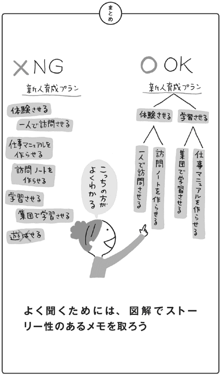
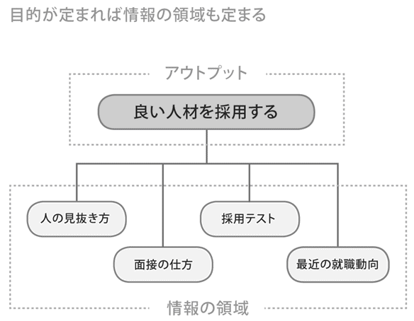

| 何でもわかりやすくする技術、伝える技術 | |
| 安田 正 | |
| クロスメディア・パブリッシング(インプレス) (2011) | |
この本は縦書きでレイアウトされています。
また、ご覧になる機種により、表示の差が認められることがあります。
株式会社クロスメディア・パブリッシング
何でもわかりやすくする技術、伝える技術
安田正
「あなたの強みは、何でしょうか？」
そう聞かれると、たとえば、「リーダーシップがあります」「企画力があります」といった答えが返ってくるでしょう。
もちろん、それも大きな強みに違いありません。
間違いないのですが、私が思うに、それだけではちょっと弱いと思うのです。
そのような強みを持っている人はこの世にたくさんいます。そんな中で、その強みを上手にアピールし活躍するためには、さらにプラスαの能力が必要です。
そのプラスαとは何でしょうか？
私が長年ビジネススキルについての講演やセミナーをしながら実感しているのは、いかに自分の言いたいことを「わかりやすく」伝えることが大事か、ということです。
きっかけは若い頃の留学体験にあります。
23歳のときにイギリスへ行ったのですが、そこで嫌というほど思い知らされたのが、「自分は本当に伝えることが下手だ」ということでした。
欧米人は本当に伝え上手で、簡単で、ロジカルで、わかりやすいのです。
たとえば海外の経営者のスピーチやプレゼンテーションを見るとわかりますが、言うことに一々説得力があり、思わず感心してしまいます。経営者や学校の先生だけではありません。学生達ですら、そうした能力をすでに身につけているのです。
一方、自分は何を説明しようとしても「何が言いたいの？」と聞き返されてしまう。英語は結構得意だったのに......です。
「このまま社会に出たらまずいんじゃないか？」
そう思ったのが、わかりやすさを身につけようとしたきっかけになりました。
以来、「わかりやすく」伝える技術について、そのトレーニング法を考え、磨いてきました。
そこで、気づいたことがあります。
優れたビジネスパーソンでも「わかりやすく」伝えることができなくて大損をしている、ということです。
たとえば最近、東京大学や早稲田大学の大学院で講座を開く機会も多くなってきたのですが、「自分のアイデアや研究などをどうすれば人にうまく伝えられますか？」という質問をたくさん受けます。
どれだけ優秀で、専門分野を持っている人達でも、それを人にわかりやすく伝えることができず、悩んでいるのです。
「せっかくいいアイディアを持っていても、それがうまく伝わらない」
学生か社会人か、頭がいいか悪いか、男性か女性かは関係ありません。
誰もが少なからずぶつかる壁なのです。
だからこそ、「わかりやすくする技術」を身につけておくかどうかで大きな差が生まれます。
実際、他にもたくさんの専門家がいる中、池上彰さんがなぜあれだけ注目されているかと言えば、彼の話は抜群にわかりやすいから。これにつきると思うのです。
本書では、「何でもわかりやすくして、それをわかりやすく伝える」ための方法を、「話す」「聞く」「図解」「質問」「書く」「読む」といったトピックに分けて説明していきます。
私達は物事を複雑に考えがちですが、そんなことはありません。
一つひとつのコツ自体はとても簡単で、あとはそれをどう組み合わせていくかだけなのです。
・「何が言いたいのかわからない！」と上司に言われる
・何度説明してもわかってもらえない
・文章の意味が通っていないと指摘される
・本を読んでも全然理解できない
・アイデアがまとまらない
・聞き出したいことをうまく聞き出せない
......そうした悩みも、必ず解決することができるはずです。
あなたがこのプラスαの「わかりやすくする技術、伝える技術」を身につけ、強みを上手にアピールできることを願っています。
２０１１年10月 安田 正
第１章 誰にでも必ず伝わる「話し方」の技術
コツ01 わかりやすい話し方の本質を理解しよう
コツ02 話の設計図で内容を決めてしまおう
コツ03 話の筋道を予告して全体を把握しよう
コツ04 話の予告は、相手によって臨機応変に変えよう
コツ05 相手の興味があるテーマを選んでしゃべろう
コツ06 質問にドンピシャで答えて、会話をかみ合わせよう
コツ07 カッコ『 』話をやめて話をスッキリさせよう
コツ08 話を絞ってダラダラ話を解消しよう
コツ09 たとえ話を使って理解を確かなものにさせよう
コツ10 ふくらました話を戻して立ち位置をしっかりさせよう
コツ11 相手の反応を見て話の切り口を変えよう
第２章 誰にでも必ず伝わる「書き方」の技術
コツ12 文章のフローを意識して、わかりやすい文体を手に入れよう
コツ13 まずは正しいビジネス言葉を知ろう
コツ14 相手にとってのわかりやすさとは？ を考えて、独りよがりから抜け出そう
コツ15 情報整理で簡潔に内容を伝えよう
コツ16 箇条書きの活用で読みやすくしよう
コツ17 まずは短く書いて、あとからまとめよう
コツ18 複雑な内容は項目を立ててストーリーの全体マップをつくろう
コツ19 フォーマットを活用して書くスタイルを決めてしまおう
第３章 どんな話もわかりやすくする「聞き方」の技術
コツ20 相手の話を聞く姿勢を身につけよう
コツ21 お互いの共通点を早いうちに見つけよう
コツ22 予想力を駆使して全体像をつかもう
コツ23 話の全体を意識して部分部分をつなごう
コツ24 メモをとって話を聞こう
コツ25 図解メモを使って理解を深め合おう
コツ26 質問を使って話し手を助けよう
コツ27 質問を使って話の流れをコントロールしよう
コツ28 質問をして話を咲かせよう
第４章 どんな情報もわかりやすくなる「読み方」の技術
長年営業をやってきて、ひとつ気づいたことがあります。人は「いい」「悪い」でモノを買うのではなく、「好き」「嫌い」でモノを買うのだ、ということです。
先日、ある役所の上役の方にセミナーの営業をする機会がありました。
営業とはいっても、思いの他盛り上がってしまい、お会いしてから２時間、セミナーに関しての説明はほとんどなく、終始雑談をしていただけでした。
ところがふいに先方から、「セミナー、早速うちでやりたいね」と思わぬ言葉が飛び出したのです。
商品の説明はしてないのに、なぜこんなことが起こるのでしょうか？
それは正しく「好き」「嫌い」の問題です。
人が話を聞くときは、本の文字を追っている時とは違います。その人の声・表情・話すテンポ、こうしたものを総合的に「聞いている」のです。
つまり、大事なのは話の内容だけではないのです。声量や表情、姿勢といった要素によってバイアスがかかります。
先の例でいえば、相手は雑談の中で私という媒体を信用してくれたので、「きっとこの人の言うことは正しいだろう」というバイアスがかかったのだと思います。
そうした状態では、１００の内容を話しただけでも、１５０にも２００にも魅力を感じてくれるようになるのです。
一方で、このバイアスを聞き手に悪い方向にかけてしまう人もいます。
よく見かけるのが、自分に自信がなさそうに見える人です。
ハキハキとしゃべることができず、表情も暗く、あいづちもうまく打てていません。そしてひたすら商品の説明をするだけ。
本当は一番大切なことは「この人からだったら買いたい」と思わせることなのに、それを磨かずに、商品知識ばかり蓄えても意味がありません。
１００しゃべっても10や20しかその良さが伝わらなければ、どうしようもありません。結果的に「あなたの話はその通りだと思うけど、今回の話に関しては見送らせて頂きます」と言われてしまいます。
聞き手が話を聞いて「なるほど！」と感じているとき、多くの場合は話し手を総合的に判断して、わかった気分になっています。先ほどあげたような、声・表情・話すテンポといった、話し手そのものの力を磨くことも、人に「わかりやすい」と言われる人になるコツのひとつでしょう。
こうした力は普段話しているときに意識をしておくことでも磨かれますが、知り合いにフィードバックをもらうことが近道です。
信頼できる上司や同僚、友達に事情を話し、
「私が話しているとき、どんな印象を受けますか？」
「自信があるように見えますか？」
「早口過ぎませんか？」
といった質問を投げかけ、率直な意見をもらいましょう。
すると「私」という媒体はどんなふうに映っているか見えてくるでしょう。
話をしていると、話題があちこちに飛んでしまって、「何の話だったけ？」と、収拾がつかなくなることはありませんか？
「あれも話さなくては・・・」「これも話さなくては・・・」と思いつくままに話すからです。この「思いつくまま」ということがポイントで、話のスタート時点で何について話そうか決めていないと収拾がつかなくなってしまいます。
これを解決する方法としては、話の設計図を描いてみることです。
設計図といっても難しいことではありません。
１ これからいくつのポイントを話せば良いのか
２ それらをどんな順番で話すかを決め、それを予告する
大切なのはこの２つだけです。２についてはコツ３で説明しますので、まずは次の話「１ これからいくつのポイントを話せば良いのか」考えてみましょう。
〈留守番電話のメッセージ例〉
「お疲れ様です。吉田です。昨日のＹ社担当者からのメールを大至急送って欲しいのですが、えーと、あとは・・・あっ、そうだ！ Ｋ社からアポを３時に変更して、場所もうちじゃなくて、先方のオフィスに変更してもらっていいですか。それから、Ｓ社の見積書を今日の夕方までに作成しておいてもらえますか？ 見積もりの内訳にはカスタマイズ費用と特別割り引きの項目を入れて欲しいのですが、それで担当者のところは私と佐藤さん連名で、あと・・・」〝ピーーーー〟（時間切れ）
次から次へといろいろな話題を思いつき、とめどなく話してしまっています。これがプランのない話し方です。聞いていてもわけがわからず、これでは仕事上さしさわりがありますね。
では、この内容でプランをつくってみましょう。まず、いくつのポイントを話すのか？ を考えてみましょう。
・「メールを送って欲しい」
・「アポを３時に変更したい」
・「場所も変更したい」
・「見積もりを作成して欲しい」
ポイントとしてはこんなところでしょうか。
しかし、ここでなるべく一緒にくくれるところは大きくくくってしまってください。
先の４つのポイントをもっと大きくくくれるのであれば、そうしましょう。
これらの４つのポイントを見ていると、「メールを送って欲しい」「見積もりを作成して欲しい」これらは大きくいうと何なのかを考えると「お願いしたいこと」となります。
一方「アポを３時に変更したい」「場所も変更したい」は「変更すること」です。
そして、その２つをくくったものの下にもっと細かい情報が入ってくるわけです。
図解してみると、この設計図は一目瞭然で、非常に把握しやすくなります。
話の設計図を描くと、話はぜったいに脱線しなくなります。
話題が飛ぶこともなくなります。
なぜなら、自分で自分の全体像を把握できるからです。
話の設計図を描くことのメリットはここにあるのです。
「ロジカル・コミュニケーション」の研修を行っていると、情報を整理して、話の設計図を描けるのですが、いざそれを使って話してみると戸惑っている受講生の方がいらっしゃいます。
設計図を使って話す際のコツは「話の大筋を話の冒頭で伝える」ことです。これを私は「予告する」と言っています。
具体的にはプランのところで出てきた、話のポイントを伝えるのです（次ページの例の下線部）。これをあらかじめ伝えることで、おおよそ話の全体を把握することができるのです。
つまり、最初に予告するだけで、すべてわかりやすい話ができてしまったようなもの。先手必勝というわけです。
では、20ページに出てきた留守番電話のメッセージの例と、左の文の予告ありの話し方とを比べてみましょう。
〈改善後〉（傍線部分が予告）「お疲れ様です。吉田です。ポイントは２点、「お願いしたい点」と「変更点」をお伝えします。「お願いしたい点」は昨日のＹ社担当者からのメールを大至急送って欲しいこと。それからＳ社の見積書を今日の夕方までに作成しておいてもらうこと、です。見積内訳にはカスタマイズ費用と特別割り引きの項目を入れて、担当者のところは私と佐藤さん連名でお願いいたします。「変更点」はＫ社からアポを３時に、場所はうちじゃなくて、先方のオフィスに変更でお願い致します」
いかがでしょうか？予告するだけで理解のしやすさが全然違うことにお気づきになるでしょう。全体像が把握できればこれからの話を聞くための心の準備ができます。
聞き手にとって非常にわかりやすいものになります。
図解で情報を整理できたら、まずはそれらは「何のこと」なのか、予告をしましょう。
話を始める前に、これからどんな話をするのかを予告すると、聞き手が話の全体像を理解することができ、わかりやすい話になる、とコツ３で説明しました。この予告の仕方も、さらにもうひとつ工夫を加えれば、聞き手の食いつきが段違いになります。
私は英語のセミナーを仕事にしていますが、その営業を私自身が行うことがあります。
ある自動車メーカーに英語セミナーの説明をしに行ったことがあります。
しかし、大手の自動車メーカーであるだけに、みなさんは英語がすでにある程度話せるのです。そんな人達に「こうすれば英語ができるようになりますよ」という説明を、どうすれば興味を持って聞いてもらえるのでしょうか。
考えた結果、セミナーの説明をする前の予告に、少し工夫を加えることにしました。
「今日は２つのことをみなさんにお話したいと思います。
まず１つ目。みなさんはすでに英語がお上手だと思います。しかし、今私がこうして日本語をしゃべっているのと同じくらいに、高い自由度で英語をしゃべることができたらどうでしょうか？ そのための方法があるということが１つ目。
そして２つ目。実は英語は、英語そのもの以外の会話のロジックを意識するだけで、海外の方とコミュニケーションがとれてしまうんだ、ということです。これは以前社長さまにもお教えしたことがあります。
今日はこの２つの話をさせてください」
こう話したとき、「ええ？ そんなことできるのか？」と、前列にいる方が身を乗り出したのがわかりました。
予告をすると、このように聞き手の反応を確認することもできるのです。
では、これを自動車メーカーに勤める人ではなく、別の人にアピールするにはどうすればいいのでしょうか。
これは先ほどとは真逆の話です。
高校時代に全国レベルの強豪校のキャプテンを務めるほどのテニスの腕前のあるテニス好きの方だったのですが、その方は英語は「からっきしダメ」 ということで、自信がまったくないと仰っていました。その方にセミナーのお話をしたときは、
「もしも、ものすごく初歩的な、いってみれば中学英語くらいのレベルの英会話だけで、海外のレストランで自由にモノをオーダーできたり、お店でショッピングできたら、面白いと思いませんか？」
と投げかけてみました。すると、「私みたいな人間にそんなことできるんですか？」と、良い反応をいただけたのです。
人によって、持っている能力や、持っている欲求は違います。
たとえば、聞き手が雑誌の編集者であれば、新しい製品や次に流行りそうな俳優・女優、あるいはライバルとなりうる他のメディアについて興味があるでしょう。
また、聞き手が高齢の方であれば、昭和の話、年金の話、健康の話などに興味があるはずです。
話の内容も、当然それに沿ったものにすることが大切ですが、最初にする話の予告も同じく人によってマッチさせることが理想です。それを頭の片隅にいれておけば、話し始めてから10秒で、聴衆を自分の話に食い入らせることができます。
先日、某国立大で行われた講演に足を運びました。講演者の方の経歴はとても魅力的で、話もココでしか聞けない貴重なものです。
......しかし、まったく面白く感じないのです。
講演はその大学以外の、一般の方向けに行なわれていたものでした。
ですから、その講演者の方の研究分野に詳しい人は決して多くないと思います。
私もそのうちの一人で、その方の経歴や研究の実績に興味はありましたが、研究の詳細について多くは知りません。
そんな中、講演で終始語られたのは研究テーマの理論や実験の話がほとんどで、門外漢の私はただただポカーンと聞いているだけでした。
講演時間は２時間だったのですが、私はついに居眠りをしてしまいました。周りを見回しても、ほとんどが同じような状態です。
結局、質疑応答でも質問者がおらず、講演会は予定よりも早く終了。
大学で講演をするほどの実績を残してきた社会のトップランナーの方の話でさえ、こんなことが起こってしまいます。
それはなぜかというと、自分の話をどう面白く伝えればいいのかということがまるで想定にないからです。
面白く伝えるための工夫や味付けをすることなく、自分の話の材料をそのまま出してしまっているのです。
では、話の面白さを決めるもっとも重要な要素とは、いったいなんでしょうか。
話のユニークさでしょうか。話のテンポや、話し手の表情でしょうか。
どれも大切な要素です。
しかし、そのどれよりも大切なのが、聞き手の興味と自分の伝えたいことを一致させることです。
大学の旧友と飲む時に必ず話題にのぼるのが、子どもの話です。
私達の世代ではこれを話しておけばまず盛り上がるだろうというテーマなのです。
しかし、私には子どもがいません。
そのため、友人が話題にしていることが全然わからないのです。
家庭の話に限らず、趣味の話、仕事の話、人によって興味の領域は違います。
初対面であるならまだしも、自分の知り合いと話をしているときには、相手がどんなことについて興味を持っているかあらかじめわかっているはずです。
ところが、人はなかなかそれに気づけません。
独りよがりな話をしないためには、話題を切りだす前に一度その話題が適切であるかどうか考えないとなりません。
先の例でいえば、「子どもの教育」と私の仕事である企業の「人材教育」は「教育」という部分では共通しています。この共通テーマを利用して、「うちの子どもの小学校ではもう１年生から英語の授業をやってるんだけど、やっぱり企業でも英語を話せるっていうのは必須条件なの？」といった具合に話し始めれば話が盛り上がると思うのです。
その子どもの話が自分にとってどういうメリットがあるのか、あるいはもっと聞き手が面白いと感じるような、聞き手との共通の思い出、経験はなかったか、一度考える必要があります。
また、聞き手が自分の知り合いではない場合は、聞き手の反応を絶えず伺っておくことが大切です。いくつか聞き手に対して質問を投げかけるといった方法も有効でしょう。
初めに紹介した講演者の方は、自分の伝えたいことと、聞き手の興味をすり合わせ、講演中に客層にあわせた質問を２、３投げかけるだけで、印象のいい講演になったはずです。
自分のする話に、相手が興味を持てていないようならば、わかりやすくする以前の問題です。まずは、聞き手が「どういう話なのかな？」と関心を示すようなテーマを探って、そこから話し始めてみましょう。
あなたが誰かに質問をしたときに、なんとも要領を得ない返事が返ってきて、「そんなことは聞いてないよ！」とイラッとしたことはありませんか？
そんなとき、返事をした相手はまったく気づいていないようです。
実は、私達もそんな拍子抜けするような返事をしてしまっていることが非常に多いのです。
ちゃんと的を射た返事をするためには、相手が聞いてきたことに直接答える、この意識が大切です。
〈相手のところに投げ返せていない例〉
Ａ営業部長：「Ｂくん、毎朝の営業トークトレーニングはちゃんとできている？」
Ｂくん：「私達の営業トレーニングは結構システマティクにしているんです。それは、まずトレーニングを始める際にその日にクリアする目標を挙げ明確にしています。ここは大事なところだと思います。何事もゴールを明確にするのは一番大切ですから。そして、トレーニングが終ったときには、お互いにその目標が達成できているかチェックをし、その成果を確認しています」
これでは部長の質問の答えになっていません。
部長の「ちゃんとできているか？」という質問に対して、まずは「できている」または「できていない」で答えなくてはならないからです。
そのためには「質問と答えがきちんとつながっているか」を意識しましょう。
〈相手のところに投げ返している例〉
Ａ営業部長「Ｂくん、毎朝の営業トークトレーニングはちゃんとできている？」
Ｂ「はい、できています。毎朝営業新人部員全員で行っています。まず、トレーニングの始めにその日にクリアする目標を挙げ、次にお互いにその目標が達成できているかチェックをし、その成果を確認しています」
まず、部長が知りたい「できているか？」に対して「はい、できています」と答えています。そして、「ちゃんとやっている」という具体的な根拠を伝えているので、質問に対する答えのつながりがはっきりとわかるのです。
Ａ「この前の各部の予算配分の会議ってどうなったんだろうね」
Ｂ「課長が『いやー、長引いちゃって、だって各部の振り分けのときに、お互いさんざんゴネるんだもん。結局、どこも昨年並に落ち着いて、今はどこも納得しているんで、長い議論がかえって皆で少ない予算を分けてやっていこう、という気持ちを合わせるためには良かったんじゃないか』っておっしゃっていました」
Ｂさんの会話のうち、『 』内が課長の言ったことを引用した部分です。第三者の言葉を直接引用するので、直接話法と言います。
このように課長の言葉を直接持ってきて、話すとダラダラと長くなるし、その上、話している人の捉え方によっては情報が断片的になり、実は正確に内容を伝えられないケースがあるのです。
ですから、このような第三者の話を紹介する場合にはポイントをまとめ、自分の表現に置き換えて伝えるようにしましょう。これを直接話法に対して、間接話法といいます。ポイントをまとめているため実はこの方が正確さは高まるのです。
〈課長の話のポイントをまとめた場合〉
Ｂ「課長によると、各部署の主張が折り合わず、だいぶ長引いたらしいのですが、昨年並みに落ち着いたらしいです。結局今はどの部署も納得できたようで、長い議論の末、『雨降って地固まる』ように、かえって皆の気持ちを合わせることができたそうです」
言ったことをそのまま引用するのではなく、ポイントをまとめてこのような表現にすると、課長の意図が端的にわかるようになります。ダラダラと続く心配もありません。
気づくとどんどん話が長くなり、どこで区切ればいいのかわからず、わけがわからなくなってくることがあります。
たとえば、加藤部長がチームリーダーの鈴木さんのところにやってきて最近のチームについてコメントしているとしましょう。
「鈴木さん、ちょっといいですか。最近の鈴木さんのチームのことなんだけどね。先日、報告ミスがあったでしょう。それで『言った』『言ってない』になって、ああいう報・連・相のミスとか、それから山田さんを書類作成のサポートに配置したでしょう。あれも彼みたいな人は、どちらかというと動き回ってお客さんのところでデモする方が合っているんだよね。あとは、チーム皆が以前だったら土曜出勤なんかもまったくいとわず来ていたのに、結構ブーブー文句言ってくるようになったよね・・・」
この話の内容を改めて分析してみると、「話にあれこれ詰め込みすぎ」なのです。
部長は注意して鈴木さんのリーダーシップを促そうとしているのですが、これではダラダラと続くただの「小言」と取られかねません。このダラダラ感をなくし、言いたいこと明確にするためには、話の内容を絞り込み一つの文に一つの事柄だけを入れるようにしましょう。
そのためには、それぞれの具体的な事柄を一言にまとめる必要があります。
加藤部長が言っている、
・「報・連・相」のミス
・不適切な人事配置
・チームの士気の低さ
これらをシンプルに「チームの動きの悪さ」とまとめてみます。
〈一つの文に一つの事柄だけを入れた例〉
「鈴木さん、ちょっといいですか。最近の鈴木さんのチームのことなんだけど、ちょっと動きが悪くないかな。具体例としては以下のことがあって・・・」
と、ここで初めて先の具体的な話が出てくるのです。
まずは初めの一文に一つの事柄だけを、それも全体のことを総括するようなことを伝えます。そのためには言いたいことを徹底的に絞り込まなければなりません。
「言いたいことは一言でいうと何であるのか？」を徹底的に考えることです。すると、必然的に文は簡潔になるはずです。
専門的な話を専門外の人にするとき、相手から「そういう専門的なことはちょっと・・・」と言われてしまうことはありませんか？
確かに専門用語というのは専門外の人にとってはウンザリしてしまうものです。
しかし今の時代、たとえば医療のインフォームド・コンセントにおける説明や、ＩＴ関連のネット環境の説明など、一般の人に専門的な内容をわかりやすく説明する機会が増えています。
ただ実際のところは、専門用語は多いものの、しくみや作業の流れ自体は意外と簡単な場合もあります。
これをうまく伝えるためにはどうしたらよいのでしょうか。
そこで、「たとえ話」を使います。ちょっと難しいと感じさせてしまう話の内容を相手に理解しやすくするために「たとえ話」が大変役に立ちます。
たとえ話をすると相手は、状況をイメージしやすくなり、リアルに想像したり、あるいは詳細まで把握しやすくなるからです。
私が英語の研修中、言語のしくみの違いについて話をするとき、よく使うたとえ話が次のようなものです。
Ａ「・・・日本語と英語の違い。これは文のつくりが違います。
たとえて言うとコンピュータのＯＳが違うことと同じです。
私は普段Macを使っているので、Windowsを使うとちょっと戸惑います。
言語もそれと同じことなのです。
英語と日本語はそもそも根本的なしくみが違うので、まるで異なる回路にのせて表現していかなければなりません。それくらい日本語と英語は違う言語なのです。
一方で英語と欧州の言語―――欧州言語とはドイツ語、フランス語などですが、これはＯＳがそれほど変わりません。
なぜ欧州の人は簡単に英語をマスターできるのかと言うと、そもそものＯＳが似ているからなのです」
言葉のしくみについて言語学的に説明してしまうと、非常に専門的になり、一般の人には理解できない内容になってしまいがちです。
そこで、コンピュータのＯＳ、といった一般的な内容に置き換えて説明するのです。すると、ちょっと身近なこととして理解もしやすくなります。
それは相手にとって想像しやすい内容だからです。想像できれば興味も湧いてきます。こうして「ちょっと難しいな」と感じていた話へと誘い込んでいくわけです。
そして、できれば相手に合わせてこのたとえ話も変えていけるとよいでしょう。
たとえ話ができるようになったら、気をつけなければならないことがあります。それは、たとえ話で話をふくらまして、そのままどんどん横道に反れ、そして最後には元の話に戻れなくなった......そんな事態です。
〈たとえ話をきっかけに話が横道に反れていく例〉
「仕事で成功するためには、自分の強みを知ることは必須です。
自分に向いている仕事はがんばりもききますし、好きなら効率よくスキルを身につけることもできると思うんです。
たとえば『ウサギとカメ』の話ありますけど、よく考えてみたら普段水中にいるカメが陸上で戦うのは不利だと思うんですよ。あれ、ウサギと泳ぎを競ったらカメは余裕で勝つと思うんですよね。
そう言えば、あの話結末は結局カメが勝ったんでしたっけ？ あれ？ どっちだったけ？ えーと、『もしもしカメよ～、カメさんよ～』って、なつかしいなぁ、実はこの歌には思い出がありまして、あれは確か、小学校のころでした・・・」
という具合でたとえ話から始まって、どんどんズレていき最終的には「仕事で成功するためには」という大きなテーマに戻れないでいます。
これは、たとえ話の位置づけがわからないときに起こる事故です。
本流の部分があって、そこから分かれて出ているのが支流、たとえ話です。だから、支流にいながらも常に本流の方向性は意識していなければいけません。
実は、たとえ話は相手の理解に合わせて詳細に入っていけばいくほど、そしてわかってもらおうといくつものたとえ話をしていけばいくほど、本流から離れていってしまいます。
こんな場合も図解が有効です。本流（テーマ）から支流（たとえ話）のつながりがひと目見ただけでわかるからです。
この図解を見ながらであれば、「さて、本流に戻るか」と意識もできます。
「これは、とっておきの話のネタ」って、あったりしますよね。これだったら誰に話してもウケるだろうという隠しネタです。ところが、同じ話をしていても、人によってウケるときとサッパリのときがありませんか？ まったく同じ話なのに......。
実はこれ、それぞれ違う相手に対していつもいつも同じ話をしていることがいけないのです。相手に合わせて同じ話でも切り口を変えて話さなければなりません。
私はある時は講師として、またある時は法人向け研修の営業としていろいろな人に話をする機会が多くあります。
内容としては、ここ数年で急激に需要が増えてきているのが「ロジカル・コミュニケーション」という、わかりやすい話し方の研修についてです。
多い時で、週３回くらい研修を行い、他の日は商談が毎日あるなどというのもザラです。
つまり、いろいろな人に、四六時中「ロジカル・コミュニケーション」の話をし続けたりするわけです。
では、私はいつもマニュアルを読むように同じ話を繰り返しているのかというと、それは違います。そんなことをしたら研修の受講生は途端に飽きてくるでしょうし、営業場面ではお客様は話の内容に何の魅力も感じなくなってしまうでしょう。
予告の話もしましたが、私は同じテーマであっても相手を見て、切り口を変えたり、そこに入れ込む内容を変えています。
「この受講生は、かなりレベルが高いのでちょっとアカデミックな内容を追加しても大丈夫だろう」
「このお客様の専門は金融なので、たとえ話に経済状況のトピックを使ってみよう」
「このお客様は流行に敏感そうなので、今話題のニュースのことを入れてみよう」
などです。講演のテーマはみな「わかりやすい話し方」で、同じ演習問題をやるのですが、枝葉の部分を相手に合わせて変えていくのです。
すると、話がまるで毎回初めて話すようにイキイキしてきます。実のところ私自身が同じ話や同じ演習問題に飽きないようにするための工夫でもあります。
雪が来る。
もうそこまできている。あと10日もすれば北海からの冬の雲がおおい渡って来て、この越後長岡の野も山も雪でうずめてしまうにちがいない。
『毎年のことだ』
まったく毎年のことである。あきもせずに、季節はそれをくりかえしているし、人間も、雪の下で生きるための習慣をくりかえしている。
これは司馬遼太郎の小説『峠』の冒頭です。
こうした安定した文章を書ける人は、長年文章を書き続け、自分の文体を手に入れた人です。
文章それぞれの配置にロジックがあり、また、独特の流れ、テンポが生まれてきます。これは何度も何度も繰り返し文章を書かなければわかりません。
司馬遼太郎の文体を「味わいがある」と表現するとすれば、同じように、「わかりやすい」という文体も存在します。
「あの著者のビジネス書の文章は、どれもわかりやすい」とか、「あいつのメールはいつも簡潔だな」などと思った経験はないでしょうか。
毎度、安定してわかりやすい文章を書ける人は、すでにそういった文章が自分のなかに染みつき、文体としてあらわれているのです。
わかりやすい文章を書くコツというのはあります。
しかし、それを知るだけで、自由自在にわかりやすい文章が書けるわけではありません。身につける必要があるのです。
たとえば池上彰さんの話がわかりやすいのは、ＮＨＫで報道記者として長年文章を書き続け、わかりやすく伝えるには、情報をどういう順番で、どういった表現を使って書けばいいのかが身についたからでしょう。
結局、書く場合でも、話す場合でも、わかりやすく伝える技術の大部分は同じですから、池上さんの場合、「わかりやすい」文体が、話すときにも表れているのでしょう。
まだ池上さんのようなコツが身についていないときは、「こういう手順で書けば必ずわかりやすくなる」という、文章を書く際のフローがまだ少ない状態です。
このフローに当てはめられない文章に突き当たると、行き詰まって書く手が止まってしまいます。
文章を書くことが仕事である小説家が、より魅力的な文章にするために時間をかけるというのならわかります。
しかし、文章を書くことがメインの仕事ではない私達が文章を細かく推敲する必要はありません。
そもそも、メール１つに５分も10分もかけている時間的な余裕もないでしょう。
文章をどれだけわかりやすく書くか、という点だけではなく、どれだけ速くその文章を書けるのかという点も重要です。
そのために、まずはコツを身につけるため、フローを意識して、何度も何度も反復して、文章を書く練習をしてください。
フローとは、「序論」「本論」「結論」といった３部構成や「起承転結」といった、いわば文章の構成です。
社内でやり取りする文書や、取引先とのメールなどのビジネスシーンだけでなく、プライベートでも、ブログで日記をつける、手紙を書くなど、文章を書く機会を増やしてください。
それらすべての文章を、いつもわかりやすく書くように心がけていれば、手持ちの文章を書くフローの数が次第に増えてきて、書く手が止まることが少なくなってきます。
そのとき、わかりやすい文体を手に入れた、と言えるのです。
「メールを一通書くのに、気づいたら30分もかかっていた」
そんな悩みを抱えている人をよく見かけます。
その原因は、ビジネス言葉を知らない、ということにつきます。
ビジネス言葉は、学校では教えてくれません。
しかし、社会人になった途端に「お世話になっております」や「何卒宜しくお願い申し上げます」などと、学校で習わなかったビジネス文書の形式張った独特の書式を求められるのです。
ビジネスシーンでのメールや文書においては、こうした２つの例のような、ある種「お決まり」ともいえるビジネス表現のほか、話し言葉では許されていた尊敬語・謙譲語・丁寧語のミスや、文と文のつながりの正確さなど、気にすべきところがたくさんあります。
ただ、「メールの文章を正しく書く」ことに気を取られていると、「わかりやすい文章」にするための時間が無くなってしまいます。
「わかりやすい文章」に意識を向けるには、まずその文章を正しく、素早く書き上げることが大前提です。
まずはその第一歩として、正確にビジネス言葉を覚えましょう。
たとえば、「当方」という言葉で自分「＝私」を表現している人を見かけます。
何となく響きがいいということがあるのでしょうが、この「当方」という言葉は、自分が所属する組織や団体を含めた複数人を指します。
そのため、自分ひとりを指す場合に使用するのは間違いなのです。
この間違いは、意外に高齢の方にも見受けられます。
また、比較的若い方が「小生」という言葉を使っているのも見かけますが、小生は目上の人が目下の人に対してへりくだって言う言葉です。
こうした意味を理解せずに、若い人がむやみやたらに使用すると、「なんて生意気なんだ」と、思わぬ悪印象を与えてしまう恐れがあります。
他にも、「ご覧になられる」といった二重敬語や、「御社」「貴社」の取り間違えといったように、周りを見回してみると基本的な文章のミスは意外と多いのです。
このようなミスは、次にあげるような話し言葉と書き言葉の違いを覚えることで防ぐことができます。
また、間違って使わないよう、ちょっと気になったら辞書や本などでマメに調べるようにしましょう。
毎回の積み重ねが、正しいビジネス言葉の習得につながっていくのです。
『あんなに詳しく書いたのに・・・』メールを読んだ相手の反応にがっかりしてしまうことがあります。一生懸命書いているつもりなのにどうにもカン違いされて、最初は相手の理解力が低いのだろう、などと思ったりするのですが、カン違いが続くと凹みます。
カン違いの原因として、「文章は一方通行」ということがあるでしょう。
「一方通行」とは、相手の反応に合わせられない。一方的に発信せざるをえない。内容を変えることができない、ということです。
話であれば相手の反応を見ながら流れを変えていけます。
たとえば、自分が話したことに対して、相手がキョトンとした顔をしていたら「たとえばですね・・・」とか「もう一度説明します・・・」などと説明の仕方を変えられます。
また、話の途中、相手のうなずきや相づちが減ってきたり、座っている椅子にヨッコイショと寄りかかって聞くようになってきたら、話に飽きてきた証拠です。
「では、これでよろしくお願いします」などと早々に話を切り上げるか、「ところで、別件なのですが・・・」と話題を変えよう、と思うでしょう。
会話のように双方向であれば、柔軟に相手に内容を合わせられますが、文章はこれができません。「文章はいつも独りよがりである」、書く前にこの前提を自覚しておいた方がよいでしょう。
この「文章は独りよがり」であることはデータでも証明されています。
「ビジネスメール実態調査２０１０」（有限会社アイ・コミュニケーション調査）によると、メールを受け取った人が感じている不快な事柄第１位は「内容がわかりにくい」と「言葉遣い」だそうです。長々としたメールを送られてきて、結局内容がわからなかった、こんな経験があるでしょう。
ところが一方、メールの送り手が相手を不快にさせてしまったと感じていることは「添付ファイルのつけ忘れ」「誤字脱字」なのです。
このように、メールの送り手と受け手の不快感への認識には大きな認識の差があります。自分がわかりにくいメールを受け取ったときにはわかるのですが、自分が送るときにはどれだけわかりにくいかが自覚できないのです。
文章というのは独りよがりなもの。そのことを意識して初めて、「相手にとってわかりやすい文章」を書こうという意識が持てます。相手にとってわかりやすい文章とは、
・結論がはっきりしていること
・伝えたい情報が整理されていること
・「誰が」「何が」などの主語をぬかさないこと
・曖昧な表現がないこと
・読みやすいフォーマットを用いること
が挙げられます。これらのことを踏まえた「わかりやすい文章を書くコツ」を次からご紹介していきましょう。
かなり丁寧に詳細まで書いているのに、主旨が伝わっていない、「ここまで書いているのになぜ伝わらないんだ？」と思ったことはありませんか？
実は、その「かなり詳細に書いていること」が問題なのです。内容のポイントは詳細に書くよりもむしろ、簡潔に書く方が伝わります。
簡潔に書くためのポイントは、
１ 最初から核心に入る
２ 削れる言葉は徹底的に削る
３ テーマは１つに絞る
があります。
まず、「最初から核心に入る」ですが、文章も話すことと同じで、思いつくままに書き始めるとついつい前置きが長くなる傾向があります。
実際、話の前置きが長い人は文章の方も長くなることが多いようです。
〈前置きが長く、余計な情報が多いメール文の例〉
各位
お疲れさまです。
本日出張で○○県○○郡の山奥の施設にいる為電波が悪く、会社用携帯が通じません。
急用の場合はこの私用携帯に電話かメールをいただけますでしょうか。こちらでしたら通じます。
この打ち合わせは17時迄です。
お手数かけますが宜しくお願いします。
なおＰＣメールも会議室から抜け出て、玄関でようやく繫がる状態です。
以上、宜しくお願いいたします。
このように前置きが長くなってしまうのは、まず状況（山奥のため電波が届きにくいこと）を説明しないと気が済まないからでしょう。
しかし、読み手の立場で読んでみると実は「なぜ、携帯がつながらないのか？」その理由について知る必要がないし、知りたいとも思わないでしょう。
ですから、書き手は、ここは「今困っています」という気持ちを伝えることをグッとおさえて「ポイント１ 最初から核心に入る」ようにしなければなりません。
そのためには核心となる「いちばん伝えるべき事柄」を把握してなければならないのです。そして、それを把握できていると「ポイント２ 削れる言葉は徹底的に削る」ことができます。
「いちばん伝えるべき事柄」を意識してこそ、余分な言葉を削れるからです。逆にこれを意識できなかったら削る言葉を選べません。
このメール文には
１ 会社携帯が通じない
２ なぜ、通じないのかその原因
３ 私用携帯だったら通じる
４ 打ち合わせが終わる時間
５ ＰＣメールがつながる状況
......実に４～５個のトピックについて詰め込んでいる上、「宜しくお願い致します」を２回も繰り返しています。
これでは、非常に読みづらく何より「何を一番伝えたいのか」がわかりません。
これも「いちばん伝えるべき事柄」を意識して「ポイント３ テーマは１つに絞る」ことで、わかりやすくなるのです。
つまり、簡潔に書くというのは、「いちばん伝えるべき事柄」を意識して書く、ということなのです。
では、前述の簡潔に書くポイント３点を踏まえてメール文を改善してみましょう。
各位
お疲れさまです。
現在、この会社用携帯、ＰＣメールが通じません。
急用の場合は私用携帯に電話かメールをいただけますでしょうか。
お手数をおかけしますが宜しくお願いします。
たった、これだけです。これだったら主旨が間違って伝わりようがないくらい簡潔です。実際、これだけの情報を伝えれば読み手にとっても充分なのです。
この３つのポイントを踏まえて簡潔な文章を作成しましょう。
メール文は、何といっても読みやすさが命です。内容は簡潔に、サクッと拾い読みできるような書き方が望ましいのです。そのために、内容を１つの文章に詰め込むのではなく、箇条書きするようにしましょう。たとえば、
〈箇条書きではないメール文の例〉
「明日の会議内容は、プロジェクトの進捗報告と来月の売り上げ見込み、それからＳ社への企画の検討を行います。なお、来月の売り上げ見込みにつきましては最新の売上見込書をお持ちになってください」
この内容自体は明快なのですが「明日の会議内容は」の主語の後に文章が続くと「・・・を行います」という文の最後まで読まなければ「何であるのか？」がわからず時間がかかってしまいます。
この同じ内容を箇条書きにしてみると、このようになります。
「明日の会議内容についてご確認お願いいたします。
１ プロジェクトの進捗報告
２ 来月の売り上げ見込み
３ Ｓ社への企画書検討
なお、２につきましては最新の売上見込書をお持ちになってください」
となります。
比べてみると箇条書きの方が一瞬で読み取ることができると思います。ビジネス文書は簡単かつ正確に内容を読み取れるのが一番重要です。
そのためにはやはり箇条書きが最適です。
また、書き手にとっても箇条書きにする際には、まず伝えたい内容がいくつになるのか、内容のポイントをあらかじめ把握しなければなりません。おのずと情報を整理することになります。つまり、相手にとってわかりやすい文章になるわけです。
箇条書きの際には、なるべく簡潔に表現しましょう。長くなると箇条書きにする意味がなくなってしまいます。目安としては、１つの箇条書きは10～15文字くらいの長さに納めるようにするとよいでしょう。
例：
「以前お伝えした新商品の納入の件ですが、台風の影響により原材料の仕入れが困難となったため、商品の生産が遅れており、期日までの納入が困難となりましたので、生産の目処がつき次第、再度ご連絡を差し上げますが、代替の商品をご用意することもできますので、ご希望の際は、お手数ですが〇〇宛てにお問い合わせくだされば、ご質問等にお答えできます。この度はご迷惑をおかけし、誠に申し訳ございませんでした。何卒ご寛恕いただきたく、心よりお詫び申し上げます」
文章を書き始めたときは、すっきりとしたわかりやすい文章を書こうと心に決めていたのに、いざ書き終えてみると、なぜか抑揚のないくどい文章になってしまう。
そんなときは大抵、読点『、』がありすぎて、句点『。』が少ないような、一文一文が長い文章になっています。前述の例は、その典型です。
「～～が、～～で、～～だから......」と、助詞を使って文章を延長していくと、主語と関係のない文が紛れ込んだり、二重の意味にとられるような文になったりと、文章の整合性をとることが難しくなってきます。間違った文章を書いていては、わかりやすくする以前の問題ですよね。
また、読み手側の視点に立って考えれば、読んでいるうちに前後の文章とのつながりを忘れてしまうため、文章が理解しづらいものになってしまっていることに気づきます。
こういった現象を避け、わかりやすい文章を書く方法は非常に単純。
短い文章を書くことです。
今まで書いていた文章の読点を、すべて句点に変えるくらいの意気込みで短くしてください。目安としては一文50文字以内です。
短く書いてみると、「なんだか味気がないなあ」とか「ぎこちないなあ」と感じるかもしれませんが、そうした文章の深みやなめらかさを出すのは、短い文章を書き終えたあとの作業と考えてください。
ひと通り書き終えたら、文章を読み返し、「ここはつなげて一文にまとめよう」などと、文章を整理していくのです。
短い文章であればあるほど、文同士の関係や階層といったロジックフローが見えやすくなりますし、ムダなことを書かなくなります。
ここでは試しに、先の例文の一文一文を短くしてみましょう。
「以前お伝えした新商品の納入の件です。大変恐縮ですが、台風の影響により原材料の仕入れが困難となりました。これに伴い商品の生産が遅れております。納入日に間に合うように対応しておりますが、難しいかもしれません。また生産の目処がつき次第、再度ご連絡を差し上げます。代替の商品をご用意することもできます。ご希望の際はお手数ですが〇〇宛てにお問い合わせください。この度は大変ご迷惑をおかけし、誠に申し訳ございませんでした。何卒ご寛恕いただきたくお願い申し上げます。心よりお詫び申し上げます」
少しやりすぎているように映るかもしれません。しかし、前の文章と比べると、一文一文の意味が、すっと頭に入るようになっていることがわかると思います。
また、「商品の生産が遅れております」と「期日までの納入が困難となりました」の二つの文のように、意味がかぶっている文があることが強調されています。こうした文のどちらかを削ることで、ムダのないスマートな文章にすることができます。
私も本を執筆する際、以前までとても長い文章を書いていました。まるで読者に嫌がらせをしているのではないかと思われるほど、長い文章です。
しかし当時は、自分がそんな文章を書いているとは露知らず、健気に原稿を書いていたものです。
たとえば10年前、ある本の執筆を行なっていました。原稿を編集者の方に送ると、ＯＫをもらえました。しかし、いざ出来上がった本を見てみると、自分が送った原稿の半分もの量が削られていたのです。
これで中身のない本になっていれば、文句のひとつでも言えるのですが、とてもわかりやすく読みやすい本になっていたため、ぐうの音も出せませんでした。
また、私はこれに懲りず、文章を詰めに詰め込んだ、分厚い英語についての本を出したこともあります。こちらを執筆するのに、気づいたらなんと３年という歳月を費やしていました。わが子のように育て上げたこの本。「さぞかし売れるだろう！」と思っていたら、びっくりするほど反響がありませんでした。
そのときにやっと気づいたのです。書くのはとても疲れるが、読む方はもっと疲れていることに。
自分の「伝えたい！」という気持ちがどれだけあろうと、独りよがりになってはいけません。
読む人からしてみると、読む時間も限られていますし、他に読む本もたくさんあります。いかに簡潔にまとめるかが書き手の技量だと感じました。
「わかりやすい」という状態を、もっと詳しく説明するならば、「ほかにくらべて短時間で理解できる」ということになるでしょう。短い文章ならば、読む時間は短くて済みます。文章を短くおさめるということは、わかりやすさに直結するコツなのです。
〈悩み〉
「報告書や議事録を書く機会が多いのですが、なかなかまとまりません。その上『読みにくいよ』と言われてしまいます。どうしたら、わかりやすい報告書や議事録をスピーディーに書けますか・・・」
伝える内容が多岐に渡り複雑で、箇条書きだけではまとめるのが難しい場合はどうしたらよいでしょうか？
たとえば、次のような内容を箇条書きで書類にまとめるとします。
１ 価格に見合った付加価値をアピール
２ 価格競争で値引きをしすぎている
３ 担当者の引き継ぎがうまくいっておらず、取りこぼしが多い
４ 引き継ぎになった場合には、顧客データを部全体で確認する
５ 商品説明がうまくできていない
６ 商品説明のための営業トークトレーニングを行う
これを一目でわかるようにするにはどうすればいいでしょうか？
まず一つ目は、それぞれの箇条書きをグループ化することです。
〈課題〉
１ 担当者の引き継ぎがうまくいっておらず、取りこぼしが多い
２ 商品説明がうまくできていない
３ 価格競争で値引きをしすぎている
〈対策〉
１ 引き継ぎになった場合には、顧客データを部全体で確認する
２ 商品説明のための営業トークトレーニングを行う
３ 価格に見合った付加価値をアピール
これだけで読む人がまずは項目を拾い読みすることができ、随分わかりやすくなります。また、項目だけで書いてある内容の全体像が一瞬で把握できます。
項目をつけるときの注意点としては、一瞬でその項目の内容が理解できるものにするということです。このためには簡潔に表現する必要があります。文章よりはキーワードの方がふさわしいでしょう。
〈当社が２０１２年に取り組むべき課題〉よりも、〈課題〉
〈営業部が今打つべき対策〉よりも、〈対策〉
内容によっては、適切な、良い項目をつくるのにあれこれ考えて時間がかかってしまうかもしれません。そんなふうに悩んでしまうときには、まずは『項目〈 〉』をブランクにしておいて、その下の内容を整理し、書きだしてしまいましょう。
その下の内容が入れば、それらは一体何のことを示しているのか、が見えてきやすい場合もあります。そして、最後に項目を入れるようにすると項目名がつけやすくなります。
「書きたいことは決まっているのに、書き始めがまとまらず『あーでもない』『こーでもない』と書き直し続けて時間がかかってしまう・・・」そんな声を聞くことがあります。
書くべき内容はあるのに、書き始めに時間がかかってしまうのは、文書のフォーマットが定まっていないことが考えられます。
ですから、スムーズに書き始めるには、まず「文書のフォーマット」を決めましょう。このフォーマットを決めるためには、自分の引き出しの中にいくつかのフォーマットを持っていなければなりません。フォーマットをいくつか持っていることで、自分の引き出しから書く内容に応じてフォーマットを選べます。
書き始めに迷うこともなくなります。
そして、それに従って内容を埋めていけば全体の流れも、表現もわかりやすくなります。
では、ビジネス文書の主なフォーマットとしてまずは下記のパターンを覚えてみましょう。
おおよそメールでの連絡の内容といえば、このような構成になっています。
１ テーマ／結論
２ 状況の詳細
３ 締めくくり
たとえば、次ページのような感じです。
１ テーマ／結論
新商品Ｘの件ですが、下記の要領でサンプルを拝見してから決定いたします。ご確認いただけますでしょうか。
２ 状況の詳細
・サンプル10個をお送り頂く
・明日中に見積もりをお送り頂く
・７月15日までにお返事する
３ 締めくくり（二つのパターンに分かれる）
１ 自分で結論を出す場合
２ 相手に結論をゆだねる場合
１ 「自分で結論を出す」場合
例）以上、何卒宜しくお願い致します。
例）以上を希望いたします。
２ 「相手に結論をゆだねる」場合
例）以上でよろしいでしょうか。
例）以上ご検討の程宜しくお願い致します。
となります。
こうしてフォーマットを意識して文書作成すると、迷うことなく、効率よく書けるというメリットがあるだけでなく、読み手にとっても次にくる内容を予想でき全体の流れを把握しやすいのです。
私は仕事柄、講演やセミナーなど、人の前で話す機会がこれまでにたくさんありました。そのおかげで、大抵のシチュエーションでは人より上手に話をすることができるようになりましたが、唯一、途中で何を話せばいいのかわからなくなってしまう、天敵ともいえる場所があります。
それは、結婚式でのあいさつです。
その理由はひとえに、聴衆の興味がこちらに向いていないからです。
聞き手のみなさんの目の前には、美味しい料理とお酒。隣には懐かしい友達がいます。もしかしたら新しい出会いもあるかもしれません。
式場のマイクスタンドの前に立つと、この聴衆の無反応さ、非協力的な姿勢に、パニックになってしまいます。人をウケさせようとして話している人間にとってこれだけ辛いシチュエーションはありません。
会話というのは、双方向のコミュニケーションです。聞き手が聞いていなければ、誰にわかってもらおうとして話せばいいのでしょうか。
大学の教授が、堂々と机の上で携帯をいじる学生相手に、わかりやすく授業をしようとするわけがないのと同じ理屈です。
ところで、話を聞く、というのはどういうことでしょうか。
ここはひとつ、日本の名司会者、タモリさんを例に出して説明してみましょう。
タモリさんといえば、「笑っていいとも！」を始めとする数々のバラエティ番組などの司会をつとめ、テレビ界を牽引している司会者です。アカデミックな知識から大衆的な知識まで、幅広いトークテーマの守備範囲を持っています。
しかし、タモリさんが日本の名司会者としての地位を確固たるものにしているのは、その特別な見識の広さだけではありません。
長年の経験に裏打ちされた会話の技術が大きな強みでしょう。
特に相づちのうまさは、日本の名だたる司会のなかで一番だと思っています。
聞き手の話をわかろうとする気持ちが相手に伝わっていなければ、相手はわかりやすく話をしようという意識をしません。
相手の話をわかりやすくし、自分のなかに蓄えるためには、話に興味があることを、姿勢や仕草、相づちを通して伝えましょう。
具体的なコツとしては、
１ 相手がストレスを感じない程度に、目を合わせること
２ 背もたれなどにもたれず、心持ち前傾姿勢をとること
３ あいづちは多く打ちすぎないこと
４ あいづちの中にときおり簡単な質問を挟むこと
５ 話をよく理解し、話に対して感じた感情・意見を簡単にコメントすること
といったことが挙げられます。
タモリさんが番組で生み出すトークを、多くの視聴者が理解し、笑いを共有できるのは、タモリさんの聞く姿勢によるところが大きいのでしょう。
人にわかりやすく話したいとき、たとえ話を使うと話を効果的に理解してもらえます。
逆に、聞き手として、相手の話をわかりやすくしたい場合も、同じくわかりやすいたとえ話を使ってもらえばいいのです。
たとえ話をさせるためには、話を始めて間もない頃に、さっさと相手と自分の共通点を見つけることがコツです。
たとえば私がある聞き手に、英語の基礎はいくつかの型を覚えるのが重要だ、という話をするとしましょう。
普通ならば、英語というものの性質や、語学を覚えるメカニズムといった抽象的な話をしなければなりません。
しかし、ここで話し手との間に「テニス」という共通点が見つかれば話は別です。
「テニスで本格的に強くなろう、全日本に出よう。と思ったら、我流ではなく、テニススクールで球出しをしてもらって、フォームをつくってから練習しますよね？
英語を本格的に身につけるとしても同じ話です」
たった10秒の話で、英語を勉強するうえで最初に正しい基礎のフォームを覚えることが重要であるという、英語学習の本質を理解してもらえるのです。
体験というものには、とても強力な説得力があります。
先ほどの例も、聞き手側では、
「そういえば最初にきれいなフォームをつくれなかったせいで、実力が３年間も伸び悩んだなあ。苦労してフォームを矯正してからは、急に強くなった気がする」
と、自身の体験からつくられた「フォームは大事」という概念がすでにあったために、すんなりと理解することができたのです。
共通点を見つけるには、雑談の中でいくつか質問をして、相手の情報を仕入れるのがポイントです。
取材や打ち合わせのときには、最初５分は雑談をした方がいい、という有名なテクニックはこうした理由からも頷けます。
質問はごく簡単なもので構いません。「ご出身はどちらですか？」「ご趣味はなんですか？」「ご兄弟はいらっしゃいますか？」など、軽い質問をしましょう。
そこから、自分につながりそうなトピックがあったら、そのトピックについてさらに質問したり、あるいは自分の話をするなどして、掘り下げてください。
もし相手が知らなくとも、自分がどういう人間であるかを相手に理解してもらうことができますから、逆に相手が自分の思いもよらなかった共通点を発見してくれるかもしれません。
結構興味を持って、面白く話を聞けていたのに、終わった後に「結局、この話何が言いたかったんだろう・・・」と思ってしまうことがありませんか？ 話し方もいけなかったのでしょうが、そんな話でもポイントを押さえて聞くことってできるんでしょうか？ これは結構難しいですね。
残念ながら「この話はどこに行くんだろう？」「結局、何が言いたかったんだろう？」と、感じさせてしまう話し方、おおよその場合がこれに当てはまってしまいます。
たとえば、私は研修の講師をすることもありますが、向学のためにセミナーを受けに行くことがあります。すると、多くの場合次の例のように話が進んでいきます。
１「まず、今年の景気動向についてですが、昨年から続くデフレの影響で相変わらずどの業界も全体的に芳しくありません。しかし、明るい話題もあります・・・」
↓
２「たとえばＩＴ業界ですが、先日、私はとあるＩＴ企業の社長さんとお話する機会がありまして・・・やはり社員教育は大切であるという結論に至ったわけです」
↓
３「実際私が新卒で入社した頃は、非常に社員教育に力を入れており、毎日研修が続き・・・そして、現在外国人留学生は、皆さん非常に優秀です。彼らのこれまでの本国での教育はどうであったのかを見てみると、実に教育熱心、生徒の方もものすごい情熱を持って勉学に取り組むわけです」
１～３一つひとつのトピックは興味深く聞けたとしても、全体としてはバラバラで何が言いたかったのか、わからない話なのです。
「なぜ、１と２と３の話を何の脈絡もなく話すのだろう・・・」
一つひとつの話は面白いのに、非常に残念な気持ちになります。
その上、驚くべきことにセミナーの受講生達は、１の話は「フーン」と納得し、２の話はそれはそれで興味深く、そして３の話も「ウンウン」と熱心に聞いて、理解しているのです。
セミナーのテーマと３つの話のつながり、全体のフローは特に気にされていないようです。
つまり、私達は話を全体として聞かずに話の一部分に聞き入ってしまう、そんな癖があるようです。それで結局「何が言いたかったんだろう・・・」となってしまうのです。
ですから、話の中身をよく理解するためには、話の全体を意識しながら聞かなくてはなりません。
話のテーマ、目的は何なのか？ を頭に置いて、それぞれの話のパートのつながりを考えながら聞くことです。
特に話し手の方が話題がバラバラとしているのなら、なおさら聞き手の方が意識しなければなりません。
それは、ちょうど地図を眺めるようなものです。
人から道順を説明されたときに「ここから、右へ曲がって、突き当たりを左に２００メートルほど行ったら白い建物があるのでその前にあります」と聞いて、これらを１つ１つのポイントとして別々に認識するのではなく、トータルで地図として眺める習慣を身につけることです。
頭の中で地図を想像し、予想しなければなりません。
話し手がその地図を描けないのであれば、聞き手の方が地図を描いてあげる、または地図として眺めて、全体を予想してあげる必要があるのです。
話を一生懸命聞いているのに、そのうち「そもそも聞きたいことは何だったっけ？」と、ふと忘れてしまうことはありませんか？
全体像をおおよそ把握できたら、現在自分はどの位置にいるのかその現在地を把握して聞くようにしましょう。そうすれば「聞きたいことは何だったか？」と迷わずにすみます。
具体的には道筋全体のどの部分を聞いているのかを意識することです。
これができると、
・質問が一番良いタイミングでできる
・ダラダラと話を続けさせなくてすむ
・抜けているポイントがあれば聞き返すことができる
といったことが可能になります。
たとえてみると、定番ドラマを見ているかのように全体の中のどの部分を見ているか、わかっている、ということです。
定番時代劇「水戸黄門」で説明すると、あの番組は見事に45分で起承転結がまとまっています。
あの番組を見ていると
「ああ、そろそろ悪人が出てくるな。だんだん盛り上がってくるぞ」
「もう少ししたら、黄門さまが登場するぞ。ヤマ場だな」
「そろそろ、葵の紋が出てくるな。そろそろ終わりだ」
と、ストーリー展開の全体像を把握できます。それをベースに今の瞬間に見ているシーンの意味が理解できます。だから、定番の時代劇は安心して見ていられるのです。
話も同じです。全体を眺められるようになったら、そこから、現在地を掌握するようにしましょう。すると、迷わず安心して話が聞けるようになります。
話を聞いて、それをまとめたはずなのに、「ちゃんと話したことが書かれていないよ」と言われてしまったことはありませんか？
話をうまく聞くためにはメモを取ることがとても有効です。その主な理由は下記の３点あります。
１ 自分自身の理解に役立つ
２ 共通理解に役立つ
３ 記憶するのに役立つ
まず、１点目の自分自身の理解とは、自分の現在地を確認することです。
話が横道に反れたり、飛んだりしたことに気づくのはメモがあるからこそなのです。
頭の中の情報整理はメモを整理することです。いわば、メモが自分の頭の中そのものなのです。
２点目、共通理解とは自分と相手との認識を共有するということです。
そもそも人の話というのはわかりにくいし、理解が難しいものなのです。
「・・・ということは、結果は○○ですよね」と口頭で確認を取っても、フタを開けてみると相手が理解しているのは○○ではなくて××だった、などということはよくあります。
だからメモを取り、それを見せて相手と話をすることで、自分の認識や話の内容を確認できるのです。
３点目は、記憶です。
ご存知のように人の記憶は曖昧です。
報・連・相で「言った、言わない」といったトラブルはしょっちゅう起きてしまうことからも、いかにわれわれの記憶が曖昧なものかがわかります。
だから、あとで確認したり記憶したりできるようにメモを取っておくのです。
メモを取る際には相手の話すキーワードをキャッチすることがポイントです。テープ起こしの原稿のような詳細な文章の再現は必要ありません。
先の道順の説明でいうと、
「ここから右へ曲がって、突き当たりを左に２００メートルほど行ったら白い建物があるのでその前にあります」
この中のキーワードは、「白い建物」です。
このキーワードをキャッチし、メモすることで確認がとれます。すると、適切な質問もできるようになるのです。たとえば、
「その白い建物はどのくらいの大きさ（何階建てくらいなの）ですか？」
といったように。
キーワードをメモして、わからない言葉やもう少し具体的にした方がよい言葉はその都度質問して明確にしましょう。
このようにキーワードをメモる、というのは案外多くの人がやっているようです。
しかし、いざそのメモを後で読み返してみると
「あれ？このキーワードって何だっけ？」
という人も案外多いようです。
メモは再現性のあるメモを、後で読み返して話の内容がわかるメモでなければなりません。
キーワードを拾ったら、キーワード同士のつながりを明確にし話の全体がわかるものにしましょう。こうすると、ストーリーがわかってくるのです。
そのためには図解でメモることです。簡単な図でいいし矢印だけでもいいのです。
たとえば
「社員教育を強化することで、それぞれのスキルが高まり、結果売上が伸びた」
これは左ページの下の図のようになります。
一方、その上の図はこの矢印を抜かして、キーワードだけが並べただけのメモです。
このような単なるキーワードの羅列では意味が通じません。つまり、ストーリーがないということです。
図を描くことで初めてキーワードが活かされ、メモとして機能するのです。

「『わかった。それでいこう！』って言ったのに、出てきた企画書は全然違うものだった・・・」
「部長は『なるほど、わかった』と言ったのに、『全然違う話じゃないか。報・連・相をしっかりやれよ』と怒られた・・・」こんなことがよくあります。すべて聞いた情報そのままなのはずなのに、このような食い違いが起こってしまうのが常です。
この食い違い防止に役立つのが図解のメモです。
このメモを見せながら聞くのです。確認する、といった方がより正確かもしれません。図を見せながら都度内容を確認していくことで、相手や自分の誤解を減らし、お互いの理解を深め合うことができます。
そこで、
「もう一度確認させていただきたいのですが、今期の売り上げアップ対策は営業スキル強化が第１ステップ、広告枠を広げることが第２ステップ、そして第３ステップが新規顧客獲得のためのキャンペーンですね」
と図を見せて指し示しながら、確認しましょう。
図を見ていると、「あれ？ ここはちょっと矛盾していますね」とか「これはいらないな」といったような、相手や自分の誤解やミスに気付くことができるし、相手の話の不明瞭なことさえ発見できるのです。
その上この誤解をお互いに指摘しやすくなるのです。
言葉のやり取りだけで「あなた、それは誤解ですよ」なんてやるのは、まるでケンカを売っているかのような失礼な物言いになってしまいます。
図を通すことで相手に対して面と向かって、直接指摘しなくてよくなるのです。
こんなところにも、図を見せながら聞くメリットがあるのです。
ダラダラと話をして、結論が見えない場合でも、話し手自身はなかなか気づかないものです。そんなときには聞き手が「話をまとめる」ことでコミュニケーションの流れを良くすることができます。
〈相手の話がダラダラと続く例〉
Ａ「今回のプロジェクトが締め切りに間に合わなかった理由は、まず、当初の予定より機材が不足していたことに、プロジェクトを開始してから気づいたんですよね。それで慌ててしまって、スタートがバタつきましたね。あとは、ちょっと勉強不足というか情報収集が足りなかったということがあります。もう少し、製薬関連の資料を集めて周辺情報を知っておくべきでしたね。そう、それから途中でやはりこの計画では無理なのではないかって、計画変更をもう少し早くしておけばよかった。これは当初からおおよそ検討がついたことだったんですよ。だったんですけど、バタついちゃって気づくと時期が遅かったっていう・・・」
これを「つまり、それは準備不足によるものだ、ということでしょうか？」と、質問形式でまとめるのです。ポイントを提示してあげることで話の脱線を防ぐことができます。
「つまり、・・・ということですか？」
「要するに・・・ということでしょうか？」
「結局、・・・というわけですね？」
といった質問でまとめるのです。
バラバラになっていた情報を集約してあげて、かつ自分の理解も確認できます。
そのためには、話の中からキーになる情報を拾い（「機材不足」と「情報不足」と「計画に無理があった」）それらをひとくくりにする事柄を生み出すのです。
Ａの話の場合、個々の情報をひとくくりにしたものが「準備不足」ということになります。
キーワードをひとくくりにするものを探すこと、これが話をまとめることです。
話を聞いていて、「ズレてきたな」と気付く頃には、往々にしてもうだいぶ横道にそれてしまっていることが多いものです。話の地図でいうと２丁目に行こうと思っているのに、もう３、４丁目くらいに来てしまっている場合がほとんどです。こうなると本人は軌道修正できません。
そんなときには、すかさず、
「では、ちょっと話を戻しますと・・・ということですね？」
と、質問しましょう。
これは質問形式でありながら、ちゃんと、もう一度もと来た道に戻していることになります。たとえば、
Ａ「海外赴任をする際に、どんな能力が必要あるかと言いますと多くの人が語学力を思い浮かべるのではないでしょうか？
でも、実際は違うと思うんです。
英語は下手でもまずは人と話してみようとする気持ち、意欲、まぁ、有り体にいうとコミュミケーション力かな・・・大切なのは。
確かに私もいろいろ英語の勉強しましたよ。英語は大事だろうって、特にリスニングは難しいな・・・結局、ＣＤとかテストとかで聞くリスニングって聞き取りやすいものだから、実際人と会話する場合には全然違ったりしませんか？
かなり英語がうまい人から聞いた話ですけど、結構自信満々で海外に行って、タクシーで運転手の言っていることがわからなくて、困ったとか話を聞くんですよ。
英語以前に運転手が態度が大きかったりすると、それだけで怖じ気づいてしまうみたいですよね。
ほら、結構タクシーの運転手ってネイティブじゃない人が多いじゃないですか。かなり訛りがひどかったりしますよね。
そんなときでも一生懸命話すことって大事ですよね」
Ｂ「なるほど、そうすると話を戻しますと、海外では英語力よりもコミュニケーション力が必要っていうわけですね」
Ａは「英語力でない」→「コミュニケーション力が大事」→「リスニングが難しい」→「英語がうまい人でも通じないことがある」→「タクシー運転手の例」→「一生懸命話す事が大事」と、どんどん話題がズレていっています。
最初に伝えようとしていたことがあって、話し始めたにも関わらず「タクシー運転手の例」あたりから、迷走し始めてしまいました。こうなってくると、なかなか本人では軌道修正できません。
そこで、聞き手がまとめてあげるのです。つまり、これが本筋とつなげてあげるということなのです。
これも「......話を元に戻すと」と直接本筋に戻しつつ、しかも質問形式で聞いているので、間違いを正している、という感じはしません。話し手にも受け入れやすい方法です。
このように、聞いている話をまとめてあげられるようになると、話している方は「なんだか話してスッキリした」と感じてくれるようになるでしょう。
話のポイントを押さえて聞くことは相手の話をわかりやすくしてあげることなのです。
飲み会で話が盛り上がるとき、話している人は一人だけ、なんていうことは、よほどお喋り好きな人がいない限りありませんよね。
大体は、話のテーマを皆で持ちまわって、くるくると喋る人が交代していきます。人と雑談するとき、話を盛り上げるのは一人ではありません。それぞれが間の手を入れたり、ボケたりツッコんだりして会話に花が咲くわけです。
逆にトークをする人が偏ると、会話の流れが滞り、盛り下がってしまいます。
このトークの流れを生むのは、聞き手の質問です。
先のコツでも言いましたが、聞き手が興味を持っているということを質問をして示すことが、話し手のモチベーションとなるのです。
たとえば誰かが、「私はいつも、どんなに忙しくても６時間は最低寝るようにしている」と、睡眠時間について話している時、「へえ・・・」とただ聞いているのでは、会話が盛り上がりません。
話を聞きながら、自分が気になったポイントや、そのテーマに絡む新しい話を考えておき、タイミングを見計らって、その場に放り投げてみましょう。
この例では、
「そのためには仕事を早く切り上げないといけませんよね。いつもどうやって仕事を早く終わらせているんですか？」や、「アインシュタインは１日10時間も寝ていたそうですから、デキる人は自分にあった睡眠時間をきちんと守っていますよね」などといったものが考えられるでしょう。
誰かの話に、「それってこういうことと似ているよね」とか「こんな話もあるよ」と、適度に話題に輪をかけると、「あ、この人は興味を持ってくれている」と話し手は、その輪の上からさらに新しい話をふりかけてくれます。
この作業の繰り返しで、話題はどんどん膨れ上がって総括的に、広範囲に広がっていきます。
一度広がってしまえばこっちのもの。話題にできるものはそこら中にたくさん落ちています。
きっと３時間でも４時間でも話していられるでしょう。
また、ただ漠然と質問をするのではなく、話を盛り上がらせる質問には、話を横に広げる質問と、話を縦に掘り下げたり、まとめてみたりする質問の、縦横２種類に分けられるということを意識しておくと、より話をコントロールしやすくなります。
たとえば、飲み会での「頼りない上司へのグチ」というテーマがあるとすれば、質問を使うことで、
・理想のリーダーはどんな要素を持っているかというテーマに抽象化（縦に掘り下げる）
・戦国時代の武将や優秀なプロ野球監督の逸話というテーマに具体化（横に広げる）
と、話を縦横に広げることができます。
このように、新しい話のテーマの切り口を、質問を通して提供することで、話のネタは尽きることなく広がっていきます。
どんな仕事にしても様々な資料やメールを読むことは欠かせません。
ところが、資料を読むことに時間がかかり、本なども最後まで読み切れないこともよくあります。
「どうしたらスピーディーに読むことができるのでしょうか？」と悩んでいる人も多いようです。
そもそも「仕事上で資料や本を読む」ための目的を考えると、それは「情報収集」です。ですから、「仕事上必要な情報収集のために検索をする」これを目指して読まなければなりません。
たとえば、「コンサルティングをするために、メーカー業界周辺の情報を集めておこう」「今度、通信システム会社に提案をするのでその情報を収集しよう」などといったときに、この目的に向かって必要な情報と不必要な情報とを仕分ける、これが仕事上の「読む」という行為です。
仕事で使えればいいわけですから、決してスミからスミまで読もうとする必要はありません。大切なのは、
１ 瞬時に情報の要不要を判断すること
２ その判断基準を明確にしておくこと
ここが効率よく情報収集できるか否かのカギを握っています。
たとえば、私は新聞の他に毎月雑誌は10冊程度、書籍は10～20冊、あとは文字媒体ではないですがインターネットとテレビ（を録画したもの）から情報収集をしています。
量からすると結構たくさんありますが、もちろん情報を仕分け読みしているので、そんなに負担になっている感じはありません。
私が常に意識している仕分けのポイントとしては次の３つです。
１ 多いに興味がある、ぜひ手に入れたい情報
２ 今まで興味がなかったが新たに興味を持った、必要になった情報
３ いらない情報
主なテーマとしては「マクロ的な経済動向」「一般的なビジネス」「ビジネスコミュニケーション」といった仕事に直結した情報です。
まずは書籍のタイトルや目次などから買うかどうか仕分けをします。
この時点で３の「いらない情報」の基準に引っかかる箇所は読みません。
本を読み進めていく際にも同じように１～３の基準に照らし合わせて「この箇所は読む必要があるのか？」と判断していくのです。
そうすると、約30分くらいで１冊は読めてしまいます。
読むというよりも、「検索」できてしまいます。
今の情報社会で仕事をする上で、情報収集は欠かせません。
しかも、それを効率よく、適切にやらないと、ただただ情報に埋もれてしまうだけになります。
効率よく「読む」ためには「読まないもの」を決めること、そんな心構えが必要なのです。
検索読みで情報を集めるのは効率がいいと紹介しましたが、あとから「このテーマについてもう一度調べたい！」となったときのために、一度検索読みをした本は、その検索テーマごとにまとめることをおすすめします。
まとめる際に行うことは３つです。
１ ワードファイルに、読んだ本のタイトルと、その内容の簡単な要約を記録しておき、目次として利用できるようにしておくこと
２ 本を読んでいる際は、重要だと思ったところには線を引いたり、ページを折り込んだり、思ったことを書き込んだりしておくこと
３ 読んだ本はテーマ別に段ボールやその他整理用品でまとめ、それが何のテーマでまとまっているのかを一目見てわかるようにしておくこと
こうして本をまとめることには、大きく２つのメリットがあります。１つ目は、必要なときにすぐ必要な情報を取り出すことができること。２つ目は、過去の自分の考えをあとで見返すことができるために、その後それが自分の考えとして定着したかどうかを確かめられることです。
よく講演でドラッカーの話をする経営者がいます。
そんなとき、その話の中でドラッカーの話がどのように登場してくるかで、この人がどのくらいドラッカーの考えを自分のものにできているのかがわかります。
たとえばドラッカーの話をそのまま、「ドラッカーはこう言っています」と引用しているだけの人は、おそらく多くの場合、講演の前に書店に行き、気になったフレーズをそのまま暗記して話しているだけです。
ドラッカーは、マネジメントに関して数々の名言を残しています。しかし、その名言で本当に彼が言い表したかったマネジメントの本質や、なぜその名言が本質であるのかという根拠を理解するには、多くの場数を踏むか、長時間の研究が必要です。
ですから、ドラッカーの話をそのまま引用すればわかりやすくなる、というのは大間違いです。
手に入れた知識をただ引用するのではなく、自分がこれまで経験してきたことや、ほかの知識などと絡め、自分なりに消化したものを話してこそ、わかりやすくてタメになる話となるのです。
手に入れた情報を自分なりに嚙み砕くには、時間が必要です。
そのため、本を検索読みしたあとは、その本を本棚に詰め込んだり、古本屋で売ったりするのではなく、テーマごとにまとめて家に置いておきましょう。
たとえばドラッカーの本を検索読みして、感じたこと、思うところがあったのなら、そこに線を引き、折り込みをして、同じテーマで検索読みした本と一緒に、段ボールにしまっておけばいいのです。
そうして10冊も読むと、自分の考えがまとまってきます。
考えがまとまったら、その10冊を段ボールにまとめておき、あとはじっくり自分のなかで熟成させていくのです。
すると、読んだ情報と自分の経験がつながっていき、そこで初めて、わかりやすくて面白い、オリジナルの考えとなるのです。
インターネットは今では情報収集には欠かせないものになっています。便利な反面、情報内容は玉石混合ですし、情報がありすぎて、すべて読むことは不可能です。
ですからこれこそ、他の媒体（本、雑誌など）よりも、より細かく目的を特定させて情報収集しなければなりません。
たとえば、自分が一番気になる健康のトピックについて調べるとしましょう。
仮に検索項目を「健康 肝臓」とグーグルで検索してしまうと、五百五十四万件もの情報が出てきてしまいます。これでは情報を探すのが困難になってしまいます。
もっと、検索項目を絞らなくてはいけません。そこで、たとえば「肝機能を高める」このような目的で検索をかけるとします。五十五万四千件に一気に10分の１にダウン。
しかし、それでもこれだけの数です。もちろんすべてを読みこなすことは不可能です。
では、情報収集に可能な数でいうと、やはり１００以下の情報ソースにしたいところです。
仮に、「肝機能を高める」必要性があるのは、「食事に偏りがある」人、「男性」しかも「独身」が多いかな...... と予想して、検索項目をより詳細にしていきます。
「肥満」「コレステロール値高」「男性」「独身」「偏った食事」「運動不足」「漢方療法」「肝機能を高める」
これで検索してみると、やっと50件になりました。これで、読むことが可能な数になります。
この中から、いくつかの情報をターゲット読みしていきます。
キーワードを拾って、おおよその大意をつかみ、後は次に移っていく、これの一連の情報検索をスピーディーに行っていかなくてはいけないのです。
とにかく、目的を細分化できるところまで、とことん絞り、そしてターゲットを絞って読み込む、これがインターネット活用のカギを握っているのです。
文体（文章のスタイル）はその人の個性そのもの、といってもよいくらいのものです。ところが、多くの人はそれを意識しません。皆さんは読んでいて文体を意識したことがありますか？
多くの場合は、「まったくない」はずです。しかし、「何か読みにくいな・・・」「内容の以外のところで、何かこの本好きじゃないな・・・」と感じてしまう場合には、この文体というものが大きく影響していることがあるのです。
たとえば、私の著作でやはりその時によって文体が違っている場合があります。だいたい初期の頃の文体は非常にカタイ......それが今では、その頃に比べると若干ヤワラカくなりました。
今では絶版にしてしまった、『ビジネスコミュニケーションの技術』（ジャパンタイムズ）これは１９９９年に発行しました。一部抜粋してみます。
「コンテクストとは、コミュニケーション上の関係やつながりを意味し、態度や視線、表情と言った非言語的な表現がどのように、どれだけ通じるかの基本環境だと理解してよいでしょう。
ハイコンテクスト社会では、思考パターン、価値観、習慣が濃密に共有化されており、意志の疎通はスピーディーで効率よく行う事が可能です」
ガチガチですね。この文体では「何だか難しそう・・・」と感じられてしまっても仕方がありません。
これに対して、ほぼ同じような内容を２００７年発行の『ロジカル・コミュニケーション（Ｒ）』（日本実業出版社）ではこのように書いています。
「ここでいうコンテクストとはコミュニケーションの共有基盤のことである。具体的には、人と人が互いに理解し合う上で必要な「言語」「知識」「体験」「価値観」「ロジック」等を指す。ハイコンテクスト文化ではこれらを濃密に共有しており、ローコンテクスト文化ではほとんど共有していない」
これでもまだカタイと言われてしまうことがありますが、以前に比べてみると文字数も格段に減りましたし、親しみやすい文体になったと言えます。
別にどちらが良い悪いというのではありません。ただ、文体が違います。それを意識していただきたいのです。
人の文章というのは、他人ですからしっくりこないものなのです。誰でも躊躇感はあります。そこで、この躊躇感はなぜなのか？それは、こういう文体だからだなと意識すれば納得できます。これが意識できないと「何かわからないけれど、ちょっと読みにくいな」とか「何だか好きじゃない」と感じてしまうわけです。文体を意識することで、自分の躊躇感のわけを知りましょう。
この人は細かく書く人なんだな......この話が飛ぶな......などと意識して読む、そしてその文体を許容してあげる。そうすると、文体に捕われずに中身に入っていけます。
すると、随分楽に読めるのです。
検索基準を決めたら、今度はアウトプットを意識して読み込んでいきます。
アウトプットとは、平たく言うと「何に役立たせたいか？」といってもいいでしょう。つまり、情報検索して、それを使う目的をどんどん具体的にさせていくことが大切なのです。
たとえば、人事部の人でしたら「良い人材を採用するには」というアウトプットを目的にするかもしれません。
そうすると、おのずと選ぶべき情報の領域が決まってくると思います。
つまり、「人の見抜き方」「面接の仕方」「採用テスト」「最近の就職動向」などです。
当然ですが、人事の領域でも「人事評価」「リストラ」「人事育成」「最近の人事領域の動向」などは検索の時点で選択しないようにしなければなりません。
今回のアウトプットとはあまり関連がないからです。

これらのタイトルを見ると「『良い人材を採用するには』がテーマなんだから「人事評価」はさすがに選択しないでしょう」と思われるかもしれませんが、何でも手当たりしだいに読んでしまう人が結構いるのです。
それではいくら時間があっても足りませんし、そもそも読んでも何も残りません。
スピードが求められる今の状況で、何も残らない読書は何としても避けるべきです。
そのためにもこのアウトプットを意識して読むべき本を選び、本を選んだ後も目次を見て、読むべき箇所を選びます。
こうして、効率の良い読書（情報収集）をしていくのです。
ですから、ベストセラーの同じ本を読むのであっても漫然と「皆が読んでいるから」とか「ベストセラーで流行っているから」ではなく「皆が今何を求めているのか」というマーケティング目的なら意義のある読書ということになります
以上のようにアウトプットを意識して、自分の目的に直結する読み方をしましょう。
ここまで主に情報をインプットすることについてお話ししてきました。
しかし、いくら意気込んで月20冊も本を読んでも、読んだそばからその内容を忘れているのではインプットとは呼びません。
それは、情報の垂れ流しと言ってもいいかもしれません。
また、やたらと線を引いたり、ダンボールにまとめたりすることも同じです。
マーカーをつけたりまとめたりするのは「忘れないようにする」という目的のための手段であって、インプットした情報の価値を上げてくれるものではありません。
インプットが初めて自分にとって役立つのは、アウトプットしたそのときです。
せっかく服を買っても、それを着なければ、迷った時間も、払ったお金もムダです。
インプットした情報も、時間とお金を払って「購入」しているわけですから、使わないと価値を取り返せないわけです。
では、いったいどうやってアウトプットするのがいいのでしょうか。
基本的に、どのような方法でアウトプットしてもいいと思います。ブログで読んだ本に関して書評を書いてみてもいいでしょう。ツイッターでその本で気になったフレーズをつぶやいてもいいかもしれません。
ただ、数あるアウトプット手段のなかで、私が一番効果があると考えているのは、人にしゃべることです。
自分がしゃべる言葉というのは、必ず頭で考えたものです。人は考えながらしゃべっています。一方で、しゃべりながら考えている、と言えます。
私はまれに「今日は本当にトークの調子がいい」と感じる日があります。
思考と言葉が直結し、考えることが自分でも驚くほどスムーズに口から出てくる、そんな日があるのです。
あまりにも調子がいいと、たまに感動して泣きそうになることすらあります。
これは自分に酔っているということではなく、もっと単純で直感的な感動が襲ってくるのです。これはおそらく、しゃべりながら「自分はこんなことを考えていたのか」と、新たな思考の発見に感動しているのだと思います。
自分が今までもやもやと抱えていたことを、口にしたことで一気にまとまっていく。これにはものすごい快感があります。
書く行為というのは、頭を使って「考えて」しまうので、そうしたことは起こりづらいのですが、話す場合にはリアルタイムで新しい発想が出てくるのです。
話すことで得られるメリットはそれだけではありません。
先日、とあるビジネス雑誌に「１億円稼ぐ７つの習慣」という特集が組まれているのを発見し、購入後、例のごとく検索読みをしました。
「ここはいいな」という箇所をあらかじめマーカーを引いておき、その部分を若手社員に教えようと、記事について話し合う場を設けました。
しかし、いざ議論を始めてみると、私は雑誌に書かれていた主張と完全に違うことを社員に話していることに気づいたのです。
そのとき初めてわかったのですが、私は多分、その雑誌の主張に心から納得いっていなかったのでしょう。
何となく、「これは今の若手に伝えておいた方がいいな」と思って線を引いていただけなのです。
人間は普段から思っていないこと、考えていないことについて自由にしゃべることができないのだということを発見しました。
現在の社会は情報過多であるといいます。
だからこそインプットの量も必然的に増えていくわけですが、インプットした情報はただ自分の中でストックしておくだけでは風化してしまうだけです。
ある意味ではお金と同じで、ただ貯めこんで貯金をすることが人生の目的になってしまってはいけません。お金は使うために貯めるものなのです。
それと同じように、情報とはアウトプットをしていくことで初めてその情報が持つ価値がわかります。中には必要なものもあるでしょうし、先の例のように本当はいらない情報だったんだと気づくこともできるでしょう。
そうして、自分自身の思考や価値観を磨くことができます。
アウトプットとインプットはセットで一つなのです。
【著者略歴】
安田正（やすだ・ただし）
株式会社パンネーションズ・コンサルティング・グループ代表取締役。早稲田大学理工学術院非常勤講師。１９９０年より法人向け英語研修を始める。現在は英語の他、ロジカル・コミュニケーション、プレゼンテーション、対人対応コーチング、交渉などのビジネスコミュニケーションの領域で講師として活躍している。大手企業はじめ、東京大学、早稲田大学、京都大学、一橋大学などでも教授経験を持つ。
著書に、『ロジカル・コミュニケーション』『ロジカル・ライティング』『会話の上手さで人生は決まる』（以上日本実業出版社）『こう使い分けたい！できるビジネスマンの英単語』（中経出版）『言いたいことが確実に伝わる17秒会話術』（明日香出版社）、『会議力トレーニング』（日本経済新聞社）『図解ロジカルトレーニング』（朝日新聞出版）など多数。
株式会社パンネーションズ・コンサルティング・グループ
http://www.pan-nations.co.jp/
安田正 ブログ
http://www.pan-nations.co.jp/mt/
何でもわかりやすくする技術、伝える技術
発行日 平成23年11月11日
著 者 安田正
発行者 小早川幸一郎
発 行 株式会社クロスメディア・パブリッシング
〒１５１－００５１ 東京都渋谷区千駄ヶ谷４－20－３
東栄神宮外苑ビル
http://www.cm-publishing.co.jp
（本の内容に関するお問い合わせ先）
ＴＥＬ ０３－５４１３－３１４０
ＦＡＸ ０３－５４１３－３１４１
発 売 株式会社インプレスコミュニケーションズ
〒１０２－００７５ 東京都千代田区三番町20
(C) Hitoshi Narita 2011 Printed in Japan